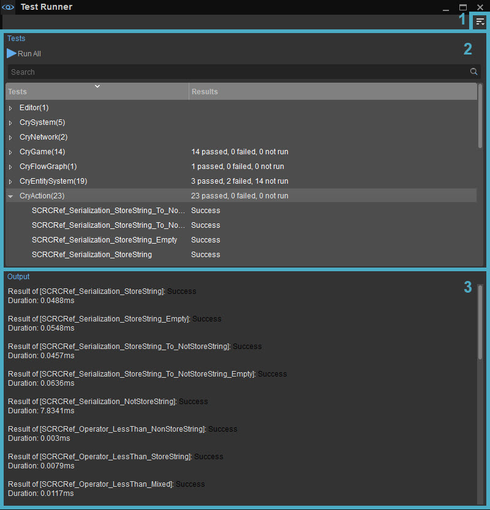

Обзор
Test Runner — это инструмент, предназначенный для тестирования определенных функций движка, проектов или плагинов, которые были реализованы ранее. Test Runner позволяет проще и быстрее запускать тесты функций. Это особенно полезно для непрограммистов, поскольку его можно использовать для запуска пользовательских тестов при условии, что они уже были добавлены в движок.
Тесты по умолчанию, предоставленные в инструменте Test Runner, можно использовать только для тестирования функций, специфичных для ядра. Если необходимо протестировать другую функцию, сначала необходимо провести соответствующий тест в Engine.
Дополнительную информацию о добавлении новых тестов в Test Runner см. Тестовый бегун страница программирования.
Инструмент Test Runner можно использовать для запуска всех тестов, доступных в категории, или для запуска теста по отдельности.
Инструмент можно найти в Инструменты → Дополнительно → Средство запуска тестов и состоит из следующих разделов:

1. Меню
Доступ к меню можно получить с помощью кнопки в правом верхнем углу Test Runner. При нажатии открывается следующее подменю.
Панели инструментов
Вариант | Описание | ||||
|---|---|---|---|---|---|
Настроить... | Открывает окно настройки панели инструментов, позволяющее пользователям настраивать существующие панели инструментов и/или создавать новые панели инструментов в рамках этого инструмента. | ||||
Блокировка панелей инструментов | Если этот параметр отключен, положения панелей инструментов и разделителей внутри этого инструмента можно изменить путем перетаскивания. | ||||
Проставки | Следующие параметры позволяют пользователям использовать разделители при позиционировании панелей инструментов.
Проставки Опции меню доступны только тогда, когда Панели инструментов → Заблокировать панели инструментов отключен. | ||||
| Панели инструментов | Перечисляет все стандартные и пользовательские панели инструментов, созданные для этого инструмента, что позволяет вам выбрать, какую панель инструментов вы хотите скрыть или отобразить. |
Если у инструмента есть панель инструментов, будь то панель по умолчанию или пользовательская, приведенные выше параметры также доступны при щелчке правой кнопкой мыши в области панели инструментов (только если панель инструментов уже отображается).
Окно
Вариант | Описание |
|---|---|
Панели | Отображает панели, которые ранее были закрыты или еще не открыты в Test Runner. С помощью этой опции могут отображаться следующие панели:
|
Сбросить макет | Сбрасывает макет. Эта опция — быстрый способ вернуться к макету Test Runner по умолчанию. |
Помощь
Открывает страницу документации для этого инструмента.
2. Панель испытаний
На панели «Тесты» отображаются все доступные тесты, которые можно выполнить. Это могут быть либо тесты по умолчанию, либо пользовательские тесты, которые уже были добавлены в движок пользователем.
Когда один тест или категория щелкнул правой кнопкой мыши, появится контекстное меню с Запустить выбранные тесты вариант, на который затем можно нажать, чтобы выполнить эти тесты.
Панель «Тесты» состоит из следующих разделов:
| Раздел | Описание |
|---|---|
| Запустить все | Выполняет все тесты, доступные в данный момент в списке «Тесты». |
| Панель поиска | Выполняет поиск определенного теста по его названию, отображая в списке только связанные тесты. |
| Тесты | Отображает тесты, которые можно выполнить. |
| Результаты | Отображает результат ранее выполненных тестов. |
3. Панель вывода
На панели «Вывод» инструмента Test Runner отображаются результаты каждого ранее выполненного теста. Результат каждого теста может быть разным в зависимости от того, пройден он или нет.
Панель «Вывод» особенно полезна, чтобы увидеть, где именно в движке произошел сбой теста и почему. Затем это помогает пользователю найти источник проблемы и потенциально устранить ее.